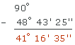
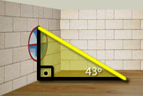

Ejercicios interactivos de triángulos
Escoge la opción correcta:
1La suma de los ángulos de un triángulo siempre es ...
2Un triángulo isósceles cuyos lados iguales miden 45° es ...
Como la suma de los lados de un triángulo es 180°, el tercer ángulo mide 180 − 2 · 45 = 180 − 90 = 90°
Por tanto, se trata de un triángulo rectángulo.
3El punto de intersección de las alturas de un triángulo se denomina ...
4El centro de la circunferencia circunscrita a un triángulo es el ...
5El baricentro es el punto de corte de las tres ...
6El incentro, centro de la circunferencia inscrita al triángulo, es el punto de corte de las tres ...
7El ángulo central de un triángulo equilátero mide ...
8Un triángulo rectángulo tiene dos ángulos agudos ...
180 − 90 = 90
Como la suma de los lados de un triángulo es 180°, los dos ángulos agudos deben medir 90°
Por tanto, los ángulos agudos son ángulos complementarios.
9En un triángulo que tiene un ángulo de 47° y otro de 70° el tercero mide ...
180 − (47 + 70) = 180 − 117 = 63
Como la suma de los lados de un triángulo es 180°, el tercer ángulo agudo debe medir 63°
10En un triángulo rectángulo se sabe que uno de los ángulos agudos mide 48° 43' 25''. El otro ángulo agudo medirá ...
180 − (90 + 48° 43' 25'') = 90 − 48° 43' 25'' = 41° 16' 35''

11No es posible que un triángulo sea ...
Un triángulo equilátero debe tener todos sus lados y ángulos iguales. Al ser rectángulo debería tener todos los ángulos de 90°, pero entonces la suma de los ángulos sería de 3 · 90 = 270°, y tendría que ser de 180°. Por tanto, es imposible que un triángulo sea rectángulo y equilátero.
12No es posibe que un triángulo sea ...
Un triángulo equilátero debe tener todos sus lados y ángulos iguales. Al ser obtusángulo debería tener algún ángulo mayor que 90°. Y por ser equilátero todos los ángulos deberían ser como este, mayor de 90°. Pero entonces la suma de los ángulos sería mayor que 270°, y tendría que ser de 180°. Por tanto, es imposible que un triángulo sea obtusángulo y equilátero.
Resuelve los siguientes problemas:
13En una habitación penetra un rayo de luz por una ventana que forma con el suelo un ángulo de 43°. ¿Qué ángulo forma el rayo de luz con la pared de la ventana por la que entra?
º
Basta considerar en triángulo rectángulo que forman la pared, el suelo y el rayo de luz, tal y como se observa en el siguiente dibujo.

Como la suma de los ángulos de un triángulo es igual a 180° es fácil calcular la medida del ángulo que nos falta.
180 − (90 + 43) = 180 − 133 = 47
Por tanto, el ángulo que forma el rayo de sol con la pared es de 47°
14¿Qué nombre recibe el punto donde deberíamos colocar la comida de estos tres pollitos para que todos estén a la misma distancia de ella?
Recibe el nombre de
El punto que buscamos es un punto que debe estar a la misma distancia de los tres vértices. Sabemos que la circunferencia circunscrita al triángulo pasa por sus tres vértices, o sea que la distancia de estos al centro de dicha circunferencia es la misma. Por tanto, el punto que buscamos es el circuncentro, que es el punto de intersección de las tres mediatrices del triángulo.
Si tienes dudas puedes consultar la teoría